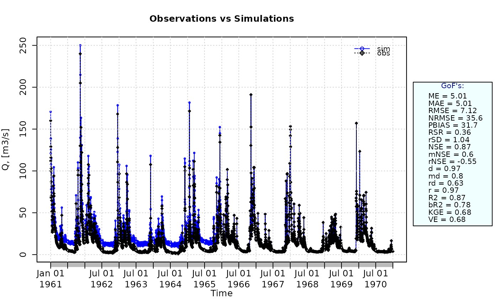

Joint Divergence Kling-Gupta Efficiency
JDKGE.RdJoint Divergence Kling-Gupta efficiency between sim and obs, with treatment of missing values.
This goodness-of-fit measure extends the traditional Kling-Gupta efficiency by incorporating a fourth diagnostic component that evaluates the similarity between the probability distributions of simulated and observed values. This additional component is based on a divergence measure computed from the logarithm of flows, allowing the metric to explicitly account for differences in distributional shape, including the representation of low and high flows.
The resulting index provides a more comprehensive evaluation of hydrological model performance by jointly considering correlation, variability, bias, and distributional similarity.
For a short description of its four components and the numeric range of values, please see Details.
Usage
JDKGE(sim, obs, ...)
# Default S3 method
JDKGE(sim, obs, s=c(1,1,1,1), na.rm=TRUE, method=c("2009","2012","2021"),
out.type=c("single", "full"), fun=NULL, ...,
epsilon.type=c("none", "Pushpalatha2012", "otherFactor", "otherValue"),
epsilon.value=NA, density.method=c("hist","kde"), nbins="Sturges" )
# S3 method for class 'data.frame'
JDKGE(sim, obs, s=c(1,1,1,1), na.rm=TRUE, method=c("2009","2012","2021"),
out.type=c("single", "full"), fun=NULL, ...,
epsilon.type=c("none", "Pushpalatha2012", "otherFactor", "otherValue"),
epsilon.value=NA, density.method=c("hist","kde"), nbins="Sturges" )
# S3 method for class 'matrix'
JDKGE(sim, obs, s=c(1,1,1,1), na.rm=TRUE, method=c("2009","2012","2021"),
out.type=c("single", "full"), fun=NULL, ...,
epsilon.type=c("none", "Pushpalatha2012", "otherFactor", "otherValue"),
epsilon.value=NA, density.method=c("hist","kde"), nbins="Sturges" )
# S3 method for class 'zoo'
JDKGE(sim, obs, s=c(1,1,1,1), na.rm=TRUE, method=c("2009","2012","2021"),
out.type=c("single", "full"), fun=NULL, ...,
epsilon.type=c("none", "Pushpalatha2012", "otherFactor", "otherValue"),
epsilon.value=NA, density.method=c("hist","kde"), nbins="Sturges" )Arguments
- sim
numeric, zoo, matrix or data.frame with simulated values
- obs
numeric, zoo, matrix or data.frame with observed values
- s
numeric of length 4, representing the scaling factors to be used for re-scaling the criteria space before computing the Euclidean distance from the ideal point c(1,1,1,1), i.e.,
selements are used for adjusting the emphasis on different components.The first element is used for rescaling the Pearson product-moment correlation coefficient (
r), the second element is used for rescaling the variability ratio (Alpha), the third element is used for rescaling the bias ratio (Beta), and the fourth element is used for rescaling the distribution similarity component (Delta).- na.rm
a logical value indicating whether 'NA' should be stripped before the computation proceeds.
When an 'NA' value is found at the i-th position in
obsORsim, the i-th value ofobsANDsimare removed before the computation.- method
character, indicating the formula used to compute the variability ratio in the Kling-Gupta efficiency. Valid values are:
-) 2009: the variability is defined as ‘Alpha’, the ratio of the standard deviation of
simvalues to the standard deviation ofobs. This is the default option. See Gupta et al. (2009).-) 2012: the variability is defined as ‘Gamma’, the ratio of the coefficient of variation of
simvalues to the coefficient of variation ofobs. See Kling et al. (2012).-) 2021: the bias is defined as ‘Beta’, the ratio of
mean(sim)minusmean(obs)to the standard deviation ofobs. The variability is defined as ‘Alpha’, the ratio of the standard deviation ofsimvalues to the standard deviation ofobs. See Tang et al. (2021).- out.type
character, indicating whether the output of the function has to include each one of the four terms used in the computation of the Joint Divergence Kling-Gupta efficiency or not. Valid values are:
-) single: the output is a numeric with the Joint Divergence Kling-Gupta efficiency only.
-) full: the output is a list of two elements: the first one with the Joint Divergence Kling-Gupta efficiency, and the second is a numeric with 4 elements: the Pearson product-moment correlation coefficient (‘r’), the variability ratio (‘Alpha’), the bias ratio (‘Beta’), and the distribution similarity component (‘Delta’).
- fun
function to be applied to
simandobsin order to obtain transformed values thereof before computing the Joint Divergence Kling-Gupta efficiency.The first argument MUST BE a numeric vector with any name (e.g.,
x), and additional arguments are passed using....- ...
arguments passed to
fun, in addition to the mandatory first numeric vector.When
density.method="kde", additional arguments are also passed to thedensityfunction used for kernel density estimation (e.g., bandwidth selection).- epsilon.type
argument used to define a numeric value to be added to both
simandobsbefore applyingfun.It was designed to allow the use of logarithm and other similar functions that do not work with zero values.
Valid values of
epsilon.typeare:1) "none":
simandobsare used byfunwithout the addition of any numeric value.2) "Pushpalatha2012": one hundredth (1/100) of the mean observed values is added to both
simandobsbefore applyingfun.3) "otherFactor": the numeric value defined in the
epsilon.valueargument is used to multiply the mean observed values. The resulting value is then added to bothsimandobs, before applyingfun.4) "otherValue": the numeric value defined in the
epsilon.valueargument is directly added to bothsimandobs, before applyingfun.- epsilon.value
numeric value used when
epsilon.type="otherValue"orepsilon.type="otherFactor".- density.method
character, indicating the method used to estimate the empirical probability density functions required to compute the divergence component. Valid values are:
-) "hist": probability densities are estimated using histograms. This is the default option.
-) "kde": probability densities are estimated using kernel density estimation.
See 'Details' section for additional information.
- nbins
numeric or character, indicating the number of bins or the method used to determine the number of bins when
density.method="hist". Default is "Sturges".
Details
In the computation of this index, four diagnostic components are considered:
1) r : the Pearson product-moment correlation coefficient computed from the raw (unsorted) simulated and observed values. The ideal value is r=1.
2) vr: the variability component, whose definition depends on the selected method:
For method="2009" (Gupta et al., 2009), variability is defined as ‘Alpha’, the ratio between the standard deviation of the simulated values and the standard deviation of the observed ones:
$$\alpha = \sigma_s / \sigma_o$$
For method="2012" (Kling et al., 2012), variability is defined as ‘Gamma’, the ratio between the coefficients of variation of simulated and observed values:
$$\gamma = (\sigma_s / \mu_s) / (\sigma_o / \mu_o)$$
For method="2021" (Tang et al., 2021), variability is again defined as ‘Alpha’, the ratio between the standard deviation of the simulated values and the standard deviation of the observed ones:
$$\alpha = \sigma_s / \sigma_o$$
The ideal value of the variability component is 1.
3) br : the bias component, whose definition also depends on the selected method:
For method="2009" and method="2012", bias is defined as ‘Beta’, the ratio between the mean of the simulated values and the mean of the observed ones:
$$\beta = \mu_s / \mu_o$$
For method="2021", bias is defined as a standardized difference between means, denoted here as ‘Beta.2021’:
$$\beta_{2021} = (\mu_s - \mu_o) / \sigma_o$$
The ideal value of the bias component is 1 for ratio-based definitions and 0 for the standardized bias formulation; however, within the unified JDKGE formulation the optimal point in the criteria space remains (1, 1, 1, 1).
4) Delta : the distribution similarity component, derived from the Jensen-Shannon divergence (JSD) computed from the logarithm of simulated and observed values:
$$\Delta = 1 - JSD$$
The Jensen-Shannon divergence quantifies the difference between the empirical probability distributions of log-transformed simulated and observed values, allowing the metric to explicitly evaluate discrepancies in distributional shape, including differences in low-flow and high-flow regimes that may not be fully captured by moment-based statistics alone.
The Joint Divergence Kling-Gupta Efficiency is defined as:
$$ JDKGE = 1 - ED $$
where the Euclidean distance in the criteria space is:
$$ ED = \sqrt{ (s[1] (r-1))^2 + (s[2] (vr-1))^2 + (s[3] (br-1))^2 + (s[4] (\Delta-1))^2 } $$
Joint Divergence Kling-Gupta efficiencies range from -Inf to 1. Values closer to 1 indicate stronger agreement between simulated and observed values across correlation, variability, bias, and distributional similarity. Values close to zero indicate substantial deviations from ideal agreement, while increasingly negative values reflect progressively poorer model performance relative to the observed hydrological dynamics.
Regarding computational aspects, the choice of density.method influences both numerical cost and smoothness of the estimated distributions.
The option "hist" relies on histogram-based density estimation and is computationally efficient, deterministic, and generally suitable for large-scale calibration or Monte Carlo simulations. The option "kde" relies on kernel density estimation, which produces smoother probability density functions and may provide a more stable estimate of distributional divergence, but typically requires greater computational time and memory resources. Consequently, "hist" is recommended for routine model calibration workflows, whereas "kde" may be preferable for diagnostic analyses or research applications where detailed characterization of distributional differences is required.
Value
If out.type=single: numeric with the Joint Divergence Kling-Gupta efficiency between sim and obs. If sim and obs are matrices, the output value is a vector, with the efficiency computed between each column of sim and obs.
If out.type=full: a list of two elements:
- JDKGE.value
numeric with the Joint Divergence Kling-Gupta efficiency.
- JDKGE.elements
numeric with 4 elements: the Pearson product-moment correlation coefficient (‘r’), the variability ratio (‘Alpha’), the bias ratio (‘Beta’), and the distribution similarity component (‘Delta’).
References
Ficchi, A.; Bavera, D.; Grimaldi, S.; Moschini, F.; Pistocchi, A.; Russo, C.; Salamon, P.; Toreti, A. (2026). Improving low and high flow simulations at once: An enhanced metric for hydrological model calibrations. EGUsphere [preprint], https://doi.org/10.5194/egusphere-2026-43.
Gupta, H.V.; Kling, H.; Yilmaz, K.K.; Martinez, G.F. (2009). Decomposition of the mean squared error and NSE performance criteria: Implications for improving hydrological modelling. Journal of hydrology, 377(1-2), 80-91. doi:10.1016/j.jhydrol.2009.08.003. ISSN 0022-1694.
Kling, H.; Fuchs, M.; Paulin, M. (2012). Runoff conditions in the upper Danube basin under an ensemble of climate change scenarios. Journal of Hydrology, 424, 264-277, doi:10.1016/j.jhydrol.2012.01.011.
Tang, G.; Clark, M.P.; Papalexiou, S.M. (2021). SC-earth: a station-based serially complete earth dataset from 1950 to 2019. Journal of Climate, 34(16), 6493-6511. doi:10.1175/JCLI-D-21-0067.1.
Note
obs and sim have to have the same length/dimension
The missing values in obs and sim are removed before the computation proceeds, and only those positions with non-missing values in obs and sim are considered in the computation
Examples
# Example 0.1: ideal case
obs <- 1:10
sim <- 1:10
JDKGE(sim, obs)
#> [1] 1
##################
# Example 1: simulated values equal to twice the observations
sim <- 2*obs
JDKGE(sim=sim, obs=obs, out.type="full")
#> $JDKGE.value
#> [1] -0.4294197
#>
#> $JDKGE.elements
#> r Beta Alpha Delta
#> 1.0000000 2.0000000 2.0000000 0.7920558
#>
##################
# Example 2: using kernel density estimation, instead of histograms (the default)
JDKGE(sim=sim, obs=obs, density.method="kde")
#> [1] -0.4158778
##################
# Example 3: Looking at the difference between JDKGE and KGE, both with 'method=2009'
# and 'method=2012'
# Loading daily streamflows of the Ega River (Spain), from 1961 to 1970
data(EgaEnEstellaQts)
obs <- EgaEnEstellaQts
# Simulated daily time series, initially equal to twice the observed values
sim <- 2*obs
# KGE 2009
KGE(sim=sim, obs=obs, method="2009", out.type="full")
#> $KGE.value
#> [1] -0.4142136
#>
#> $KGE.elements
#> r Beta Alpha
#> 1 2 2
#>
# JDKGE (Ficchi et al., 2026):
JDKGE(sim=sim, obs=obs, method="2009", out.type="full")
#> $JDKGE.value
#> [1] -0.4179194
#>
#> $JDKGE.elements
#> r Beta Alpha Delta
#> 1.0000000 2.0000000 2.0000000 0.8975529
#>
# KGE 2012
KGE(sim=sim, obs=obs, method="2012", out.type="full")
#> $KGE.value
#> [1] 0
#>
#> $KGE.elements
#> r Beta Gamma
#> 1 2 1
#>
# JDKGE (Ficchi et al., 2026):
JDKGE(sim=sim, obs=obs, method="2012", out.type="full")
#> $JDKGE.value
#> [1] -0.005234004
#>
#> $JDKGE.elements
#> r Beta Gamma Delta
#> 1.0000000 2.0000000 1.0000000 0.8975529
#>
# KGE 2021
KGE(sim=sim, obs=obs, method="2021", out.type="full")
#> $KGE.value
#> [1] -0.2744084
#>
#> $KGE.elements
#> r Beta.2021 Alpha
#> 1.0000000 0.7900105 2.0000000
#>
# JDKGE (Ficchi et al., 2026):
JDKGE(sim=sim, obs=obs, method="2021", out.type="full")
#> $JDKGE.value
#> [1] -0.0269328
#>
#> $JDKGE.elements
#> r Beta.2021 Alpha Delta
#> 1.0000000 0.7900105 2.0000000 0.8975529
#>
##################
# Example 4:
# Loading daily streamflows of the Ega River (Spain), from 1961 to 1970
data(EgaEnEstellaQts)
obs <- EgaEnEstellaQts
# Generating a simulated daily time series, initially equal to the observed series
sim <- obs
# Computing the 'JDKGE' for the "best" (unattainable) case
JDKGE(sim=sim, obs=obs)
#> [1] 1
##################
# Example 5: JDKGE for simulated values equal to observations plus random noise
# on the first half of the observed values.
# This random noise has more relative importance for ow flows than
# for medium and high flows.
# Randomly changing the first 1826 elements of 'sim', by using a normal distribution
# with mean 10 and standard deviation equal to 1 (default of 'rnorm').
sim[1:1826] <- obs[1:1826] + rnorm(1826, mean=10)
ggof(sim, obs)

JDKGE(sim=sim, obs=obs)
#> [1] 0.6760578
##################
# Example 6: JDKGE for simulated values equal to observations plus random noise
# on the first half of the observed values and applying (natural)
# logarithm to 'sim' and 'obs' during computations.
JDKGE(sim=sim, obs=obs, fun=log)
#> [1] 0.7140393
# Verifying the previous value:
lsim <- log(sim)
lobs <- log(obs)
JDKGE(sim=lsim, obs=lobs)
#> [1] 0.7140393
##################
# Example 7: JDKGE for simulated values equal to observations plus random noise
# on the first half of the observed values and applying (natural)
# logarithm to 'sim' and 'obs' and adding the Pushpalatha2012 constant
# during computations
JDKGE(sim=sim, obs=obs, fun=log, epsilon.type="Pushpalatha2012")
#> [1] 0.7194128
# Verifying the previous value, with the epsilon value following Pushpalatha2012
eps <- mean(obs, na.rm=TRUE)/100
lsim <- log(sim+eps)
lobs <- log(obs+eps)
JDKGE(sim=lsim, obs=lobs)
#> [1] 0.7194128
##################
# Example 8: JDKGE for simulated values equal to observations plus random noise
# on the first half of the observed values and applying (natural)
# logarithm to 'sim' and 'obs' and adding a user-defined constant
# during computations
eps <- 0.01
JDKGE(sim=sim, obs=obs, fun=log, epsilon.type="otherValue", epsilon.value=eps)
#> [1] 0.7145427
# Verifying the previous value:
lsim <- log(sim+eps)
lobs <- log(obs+eps)
JDKGE(sim=lsim, obs=lobs)
#> [1] 0.7145427
##################
# Example 9: JDKGE for simulated values equal to observations plus random noise
# on the first half of the observed values and applying (natural)
# logarithm to 'sim' and 'obs' and using a user-defined factor
# to multiply the mean of the observed values to obtain the constant
# to be added to 'sim' and 'obs' during computations
fact <- 1/50
JDKGE(sim=sim, obs=obs, fun=log, epsilon.type="otherFactor", epsilon.value=fact)
#> [1] 0.7259865
# Verifying the previous value:
eps <- fact*mean(obs, na.rm=TRUE)
lsim <- log(sim+eps)
lobs <- log(obs+eps)
JDKGE(sim=lsim, obs=lobs)
#> [1] 0.7259865
##################
# Example 10: JDKGE for simulated values equal to observations plus random noise
# on the first half of the observed values and applying a
# user-defined function to 'sim' and 'obs' during computations
fun1 <- function(x) {sqrt(x+1)}
JDKGE(sim=sim, obs=obs, fun=fun1)
#> [1] 0.7995661
# Verifying the previous value
sim1 <- sqrt(sim+1)
obs1 <- sqrt(obs+1)
JDKGE(sim=sim1, obs=obs1)
#> [1] 0.7995661
##################
# Example 11: JDKGE for a two-column data frame where simulated values are equal to
# observations plus random noise on the first half of the observed values
SIM <- cbind(sim, sim)
OBS <- cbind(obs, obs)
JDKGE(sim=SIM, obs=OBS)
#> obs obs
#> 0.6760578 0.6760578